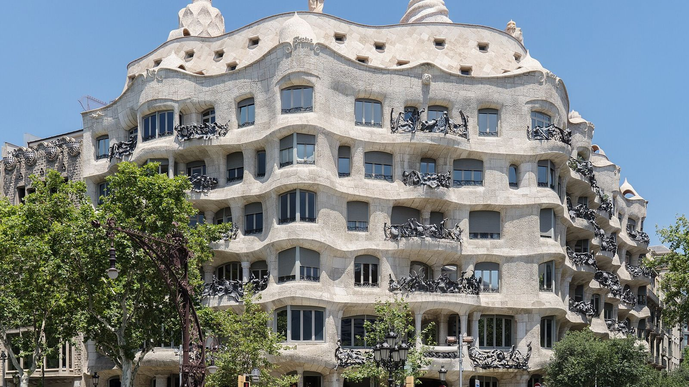

Un apodo burlón
La fachada de piedra rugosa y ondulada parecía a muchos una cantera abierta, y La Pedrera empezó como una broma. Hoy es el segundo nombre oficial del edificio.
Construida entre 1906 y 1912 para Pere Milà y Roser Segimon, la última casa de Gaudí le pareció tan rara a Barcelona que la apodaron La Pedrera, la cantera. El nombre se quedó.
Actualizado

En 1905 el promotor Pere Milà se casó con Roser Segimon, la rica viuda de un hombre que había hecho fortuna con el café en Guatemala. Ese año compraron una casa en el Passeig de Gràcia y le encargaron a Antoni Gaudí sustituirla por un edificio de viviendas: ellos vivirían en la planta principal y alquilarían el resto.
Las obras empezaron en 1906 y terminaron en 1912. La fachada de piedra se sostiene sola y los pisos descansan sobre pilares en lugar de muros de carga, así que las viviendas se podían distribuir con libertad; el edificio tenía además un garaje subterráneo. A Barcelona le pareció tan extraño que lo apodó La Pedrera, la cantera, y los caricaturistas se burlaron de él.
Fue la última casa particular de Gaudí antes de dedicar el resto de su vida a la Sagrada Família. La UNESCO la declaró Patrimonio de la Humanidad en 1984, y desde 2013 es la sede de la Fundació Catalunya La Pedrera.
La fachada de piedra rugosa y ondulada parecía a muchos una cantera abierta, y La Pedrera empezó como una broma. Hoy es el segundo nombre oficial del edificio.
La fachada de piedra no carga el edificio: lo hacen pilares y vigas. Eso permitió que cada piso tuviera una planta distinta y libre.
Las chimeneas y torres de ventilación de la azotea parecen guardias con casco. Los balcones de hierro retorcido se hicieron con el colaborador de Gaudí Josep Maria Jujol.
Significa «la cantera» en catalán: su fachada de piedra rugosa y ondulada recordaba a una. Empezó como un apodo burlón.
Entre 1906 y 1912, para Pere Milà y Roser Segimon.
Sí, incluido un piso, el desván y la azotea. Reserva en línea, sobre todo para el atardecer y las visitas nocturnas.
Pere Milà y Roser Segimon vivieron en la planta principal desde 1911; los demás pisos se alquilaban. Algunas viviendas siguen habitadas.
La fachada de piedra se sostiene sola y los pisos descansan sobre pilares en lugar de muros de carga, así que las viviendas se podían distribuir con libertad.
Arc de Triomf · Barcelona Cathedral · Park Güell · Plaça Reial · Sant Pau Recinte Modernista · Santa Maria del Mar
Audioguía de BarcelonaTodos los lugares de Barcelona, con la historia que la app te cuenta allí.